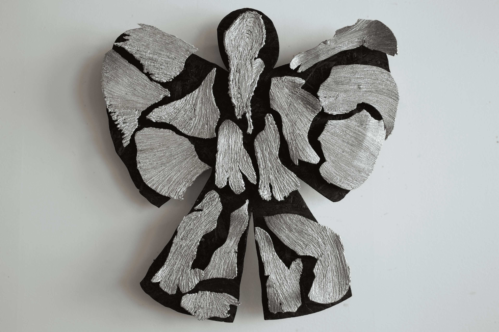
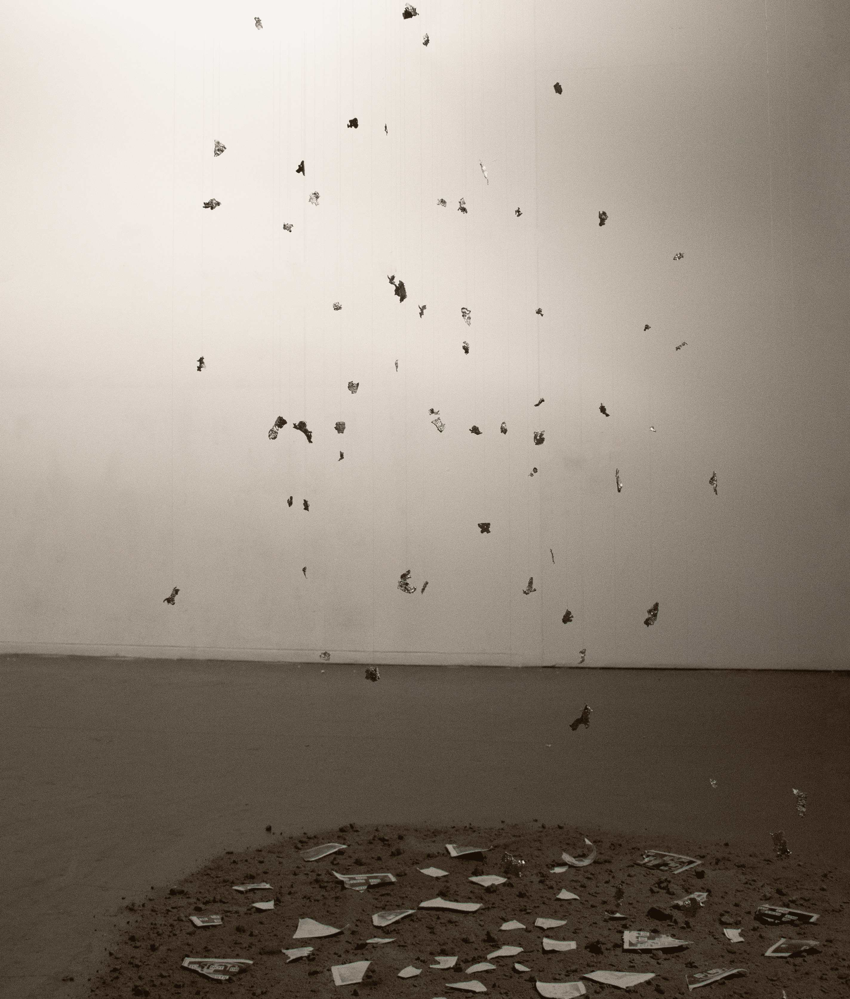

In The Ashes — 2026 — Ongoing
In The Ashes is a starting point for my ongoing masters project. I want to visualize, discuss and reflect over moments I’ve felt as my Swedishness has been questioned due to ethnic origin and physical appearance. There is an investigative approach for this work on how my making can enlighten perspectives both for me and the outside world on aspects of second generation immigration as heritage, belonging and feelings of in-betweenness.
In order to express my feelings and experiences connected to the context, writing has been of great importance as a method within this work. The texts serve as a basis for the creation itself and investigate the connection between writing as a bridge between thoughts, imagination, experiences and physical form.

Snowangel — 2026
Wall hanged work built up by fabricated aluminium pieces and burnt wood Dedicated to my family and siblings in Afghanistan
The drops on my ears brings me back,
The sound is reminiscent of the hard rain hitting the fabric of the stroller.
Pulled you forward, made faces that made you smile.
The US left, Sweden too,
Billions spent, hundreds of thousands died.
The winds carry the ashes of their souls.
The weapons factories make good money.
The Taliban are now in power.
I have three siblings left, in a homeland I've never visited,
Ellie, I was like a father to you before you disappeared.
Before you disappeared.
Are you alive? Hope you are well.
I stayed behind, wondering every day what would have happened if I had followed,
I wonder if we'll see each other again,
or if it's too late.

To Be? — 2026
Installation of multiple casted aluminum pieces, photopolymer prints and ash.
To not be
But still be
But still not be
To be
But still not be be
But still be